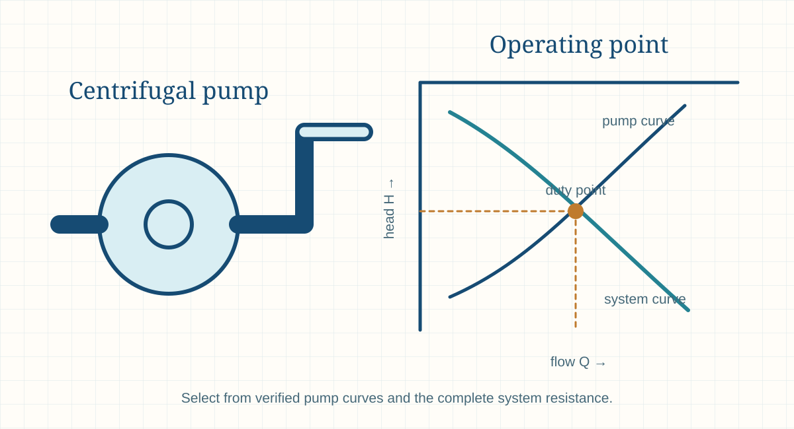

Engineering principle
Pump Curves and System Curves
Pump curves show how a specific pump responds to changes in flow, while system curves show the head required by the connected system. Their intersection identifies the expected operating point.

- Content type
- Engineering principle
- Level
- Engineering › Fluid Mechanics, Piping, Pumps, Fans and Ducts › Pumps › Centrifugal Pumps › Pump Curves and System Curves
- Audience
- Student · Design engineer · Project engineer · Plant engineer
- Last reviewed
- 30 August 2026
What Is Pump Curves and System Curves?
A pump curve shows how a specified pump behaves at a stated speed, impeller diameter and liquid basis. It commonly presents head versus flow, efficiency, power and NPSH required. A system curve shows the head required by the connected piping system at different flows.
The actual operating point is the intersection of the pump and system curves. It is a result of the complete system, not a pump catalogue number. Changes to a control valve, filter, tank level, line-up, fluid viscosity, speed or parallel pump operation can move the intersection.
Curve interpretation is essential for selecting a pump near a suitable operating region and for diagnosing why a field pump delivers too much or too little flow.
Why Is Pump Curves and System Curves Important in Engineering?
Pump and system curves prevent an apparently correct flow/head selection from becoming an unstable, inefficient or overloaded installation. They allow engineers to see static-head requirements, the flow-squared trend of many losses, expected control range and the effect of speed changes.
They are also a communication tool between process, piping, mechanical, electrical and vendors. A documented curve set clarifies which assumptions are driving the duty point and whether the pump has margin at normal, maximum and degraded conditions.
Key Terms and Definitions
- Pump curve
- Manufacturer characteristic showing pump head and related performance over a flow range.
- System curve
- Head required by the connected system as flow changes.
- Operating point
- Intersection of pump and system curves at the stated conditions.
- Static head
- Flow-independent elevation or pressure requirement in a system.
- Friction head
- Flow-dependent resistance from pipe, components and equipment.
- BEP
- Best efficiency point on a specified pump curve.
- Shutoff head
- Head near zero flow on the pump curve.
- Runout
- High-flow end of operation where pump and motor limits may need review.
Fundamental Principle
A simplified liquid system curve can be written as H = Hstatic + KQ². Static head is present even at zero flow; friction and component losses commonly grow with flow. The pump curve generally falls as flow increases for a fixed-speed centrifugal pump.
The duty point moves when either curve changes. Closing a valve increases system resistance and usually reduces flow. Reducing speed moves the pump curve. Fouling may raise the system curve. A control scheme must be evaluated against the expected curve movement rather than only one design point.
Engineering interpretation and design basis
A pump curve expresses how head, efficiency, power and NPSH requirement vary with flow for a particular pump, speed and impeller condition. A system curve expresses the head required by the installed system at each flow. The operating point is their intersection, so any change in valve position, static level, line resistance, fluid properties, pump speed or impeller condition can move the duty.
The most useful curve review is therefore an operating-envelope exercise, not a single-point check. It should consider normal, minimum, maximum, future, start-up and upset cases as relevant; it should also identify minimum continuous stable flow, preferred operating region, runout limits, driver power, NPSH margin and control method.
Formulae, Symbols and Units
Simplified system curve
Hsystem = Hstatic + KQ²
Use only as an appropriate screening form; real systems can include variable pressure requirements and control effects.
Operating condition
Hpump(Q) = Hsystem(Q)
The duty point is the common head and flow satisfying both curves.
Speed affinity screening
Q₂/Q₁ ≈ N₂/N₁
For the same pump and comparable liquid/system conditions.
Head affinity screening
H₂/H₁ ≈ (N₂/N₁)²
Confirm against supplier curves and the actual variable-speed range.
Interpretation before use
A curve is an engineering boundary, not a promise of a fixed flow. Its test conditions, tolerances, impeller trim, speed, density, viscosity and curve revision must be reviewed alongside the actual system assumptions.
Use supplier curve review for parallel or series pumping, variable-speed operation, high-energy pumps, systems with large static head, control-critical duties, NPSH limitations or any service requiring guaranteed performance.
Using the result in engineering work
A typical system curve combines static head with frictional head that often rises approximately with flow squared for a fixed liquid, pipe arrangement and valve condition. This approximation does not replace detailed modelling where viscosity, two-phase behaviour, variable equipment loss or control-valve behaviour materially changes the relationship.
Pump affinity relations are useful for screening speed or impeller changes under similar conditions, but they do not replace tested curves. Flow tends to change with speed, head with speed squared and power with speed cubed; efficiency, NPSH, mechanical limits and motor capacity still require supplier confirmation.
Assumptions and Validity Range
- Pump curve data correspond to the actual equipment and operating speed.
- System losses reflect the intended line-up, pipe condition, equipment and control-valve state.
- Static elevation and required discharge pressure are correctly identified.
- Fluid properties and viscosity corrections are appropriate.
- NPSH and power curves are checked at the possible operating range.
- The analysis is revised when the system or pump configuration changes.
Factors Affecting the Result
Valve position
Throttling raises system resistance and moves the duty toward lower flow.
Tank level
Changing suction or discharge liquid level changes static head.
Fouling
Filters, heat exchangers and pipes can raise K and shift the system curve upward.
Speed
Variable speed changes the pump curve and can offer energy/control benefits within limits.
Parallel pumps
Combined pump performance and branch interactions require a combined curve assessment.
Liquid condition
Density, viscosity and vapour pressure can affect head interpretation, efficiency, power and NPSH.

Step-by-Step Engineering Method
- Obtain the pump curve. Confirm model, speed, impeller diameter, curve revision and liquid/test basis.
- Define system boundaries. Identify suction source, discharge destination, elevations, required pressures, all piping and components.
- Calculate static head. Include relevant liquid levels and pressure requirements at zero flow.
- Calculate flow-dependent losses. Build the system resistance for several flow points.
- Plot or compare curves. Locate the operating intersection and review BEP proximity.
- Check power and NPSH. Evaluate values at normal and credible limiting points.
- Assess control. Review throttling, bypass, speed control and parallel/series operation.
- Document changes. Update curves when line-up, capacity or equipment changes.
What to record with the result
Keep the curve source and revision, flow/head calculation table, static-head basis, line-up, friction and K assumptions, liquid properties, selected operating point, power/NPSH checks and control philosophy. This record makes a later field comparison meaningful.
Review curve movement over the operating range, not only the design point. A system that operates with variable tank level, frequent filter fouling, parallel pumps or a broad demand range can require a control study and supplier confirmation.
Design-review checklist
- Obtain the correct pump curve. Confirm model, impeller diameter, speed, rotation, test liquid, curve revision and applicable tolerance.
- Define system boundaries. Identify suction source, discharge destination, static levels, pressures, pipe runs, fittings, equipment and control valves.
- Build curves for operating cases. Calculate normal, minimum, maximum and credible future or upset system requirements.
- Plot the operating point. Locate the intersection of pump and system curves at the actual liquid condition.
- Check efficiency and power. Read values at the duty point and verify the driver across the full allowable flow range.
- Check operating limits. Review preferred range, minimum continuous stable flow, runout, vibration, temperature rise and recirculation limits.
- Check NPSH margin. Compare NPSHa and NPSHr at the controlling flow and speed, not only at the nominal point.
- Set the control philosophy. Review throttling, VFD, bypass, parallel operation or impeller trimming with the supplier and process requirements.
Illustrative Engineering Example
Hypothetical preliminary example — not a design calculation
A system has 12 m of static head and 8 m of friction loss at 0.040 m³/s. Its head requirement at that flow is 20 m. A candidate pump is acceptable only if its verified curve provides about 20 m at the corresponding flow, with suitable efficiency, power and NPSH margin.
If a control valve is throttled or a filter fouls, the system curve rises and flow falls. If the tank level drops, static head can change. The point must therefore be checked over the operating envelope, not frozen at one number.
Industrial Applications
Pump selection
Match candidate pumps to full system duty rather than a single listed capacity.
Variable-speed drives
Estimate how speed changes can move the operating point and power demand.
Parallel pumping
Plan staged capacity and avoid unstable interaction between pumps.
Control-valve review
Allocate sufficient pressure margin for process control.
Energy optimisation
Identify excessive throttling or pumps operating far from their efficient region.
Troubleshooting
Compare field flow/pressure readings against predicted curve intersections.
Plant expansion
Assess whether existing pumps and lines can support higher throughput.
Maintenance planning
Predict the operational effect of fouling, impeller wear or changed clearances.
Selection and operating context
A throttling valve moves the operating point by increasing system resistance, while a VFD changes the pump curve through speed. Either approach can be appropriate, but their energy, controllability, turndown, minimum-flow and reliability effects differ. Compare the full operating envelope rather than selecting controls from a single normal-point curve.
Parallel pumps add another layer because each unit and the common piping influence flow division. An operating point that is stable with one pump may be unstable or inefficient with two. Use combined-pump curves, common-header losses and minimum-flow requirements when assessing staged or parallel arrangements.
Decision record and final-design handover
Maintain a curve register that ties each plotted pump curve to a manufacturer revision, impeller diameter, speed, test liquid, efficiency basis and tolerance. Maintain a matching system-curve record that identifies static conditions, pipe and equipment losses, flow cases, fluid properties and valve line-up. Without these references, a later operating-point discussion can become an argument between unmatched data sources.
Use curve review as an operating-management tool. It can indicate when a control valve is wasting excessive head, when a VFD speed change is approaching a power limit, when parallel sequencing is unstable or when a fouled system has shifted from its baseline. The review must be refreshed after major piping, equipment, fluid or control changes.
Final design and commissioning checks
- Use the supplier curve revision for the exact pump, impeller, speed and rotation.
- Prepare system curves for normal, minimum, maximum, future and abnormal line-up cases.
- Locate efficiency, power, NPSH and allowable operating-range limits at every expected point.
- Check runout and low-flow conditions, not only the rated intersection.
- Evaluate the selected control method for energy, stability, turndown and minimum-flow needs.
- Save commissioning points and measurements as the baseline for later curve comparison.
Scope control before final use
Curve information should be controlled like any other design input. If an impeller trim, speed, fluid property, line route, valve philosophy or equipment pressure drop changes, regenerate the operating-envelope plot. This avoids commissioning a pump against a system curve that was correct for an earlier version of the process or piping design.
Further design coordination
Where test acceptance is required, define the permitted flow, head, efficiency, power, NPSH and vibration tolerances before procurement. The acceptance point, test liquid and conversion method must match the contractual duty basis; otherwise a valid factory test may not demonstrate the site operating requirement. Retain the agreed acceptance curve with the operating-envelope plot for future comparison, together with the equipment data sheet, approved control philosophy and actual commissioning readings. This package provides a clear baseline for performance, capacity and maintenance decisions.
Common Mistakes and Limitations
- Using a curve for the wrong speed or impeller trim.
- Ignoring static head.
- Treating normal flow as the only case.
- Mixing head bases for different liquid densities.
- Ignoring NPSH and power at runout or low flow.
- Assuming parallel pumps simply double the single-pump flow.
- Using a clean-system curve for a fouled process.
- Treating a hand-drawn curve as supplier-certified performance.
Troubleshooting signals
Measured duty differs from curve
Verify curve revision, impeller trim, speed, rotation, actual liquid properties, system line-up, instrument calibration and pressure-tap locations.
Operation near runout
Inspect discharge resistance, bypass paths and control action; high flow may overload the driver or reduce NPSH margin.
Operation at low flow
Check minimum continuous stable flow, recirculation, temperature rise, internal recirculation, vibration and seal/bearing conditions.
Parallel-pump instability
Review common-header curve, check-valve behaviour, pump-curve shape, pump matching and control sequencing.
Frequently Asked Questions
What is the operating point?
It is the flow and head where the pump curve intersects the system curve.
Why does a pump not always deliver its rated flow?
Actual flow depends on system resistance, static head, speed, liquid condition and pump curve.
What is static head?
The flow-independent elevation and/or required pressure component of system head.
Why does the system curve rise?
Friction and many component losses increase strongly with flow.
Can a valve change the duty point?
Yes. Throttling adds resistance and usually reduces flow.
What is runout?
The high-flow end of a pump’s operating range, where power and NPSH need checking.
How does a VFD affect the curve?
Speed changes move the pump curve; verify performance and operating limits with supplier data.
Why is BEP important?
Operation near the preferred efficient region generally supports better reliability and energy use.
Can fouling change pump flow?
Yes. Fouling increases resistance and can shift the system curve upward.
Can this page be used for final pump selection?
No. Use verified supplier curves, complete system data and qualified engineering review.
What sets a pump operating point?
The operating point is the intersection of the actual pump curve and the actual system curve at the fluid condition, speed and configuration in service.
Can a control valve increase pump capacity?
A throttling valve increases resistance and normally moves the operating point to lower flow. It may be needed for control, but it does not create pump head.
Why review driver power at runout?
Some pumps draw their highest power at high flow. A normal-point motor check may not protect the driver at low system resistance or abnormal line-up.
Are affinity laws enough to approve a speed change?
No. They are screening relations. Confirm the actual curve, NPSH, power, vibration, mechanical speed, seal and motor/VFD limits with the supplier.
References
- Karassik, I. J., Messina, J. P., Cooper, P. and Heald, C. C. Pump Handbook. 4th ed. McGraw-Hill. 2008.
- Hydraulic Institute. ANSI/HI Pump Standards. Use the current licensed standard and manufacturer data for final work.
- Munson, B. R., Okiishi, T. H., Huebsch, W. W. and Rothmayer, A. P. Fundamentals of Fluid Mechanics. 9th ed. Wiley. 2021.
- Fox, R. W., McDonald, A. T., Pritchard, P. J. and Leylegian, J. C. Fox and McDonald’s Introduction to Fluid Mechanics. 10th ed. Wiley. 2020.
This page is an original educational summary. It does not reproduce protected book text, figures, tables or standards material. Use current approved sources and the project design basis for final work.
Review Information
Evidence expected before design use
This Pump Curves and System Curves guide explains the calculation and decision framework, but it is not a substitute for the project design record. Before using a result beyond a preliminary study, verify the actual equipment or line configuration, operating range, material or fluid condition, drawings, measurement basis and governing project requirements.
Retain the input source, calculation version, units, condition basis, assumptions, limits and reviewer comments with the result. Recalculate when a flow, temperature, pressure, geometry, equipment curve, control setting or system line-up changes; an earlier valid result may not remain valid after a plant modification.
Where reliability, safety, environmental compliance, production capacity or a supplier guarantee is affected, compare the result against current manufacturer information, applicable codes and qualified engineering review before making a final decision. This requirement remains important even when a simple worked example appears to match the expected duty. Record curve tolerances, safety margins and revisions as well.